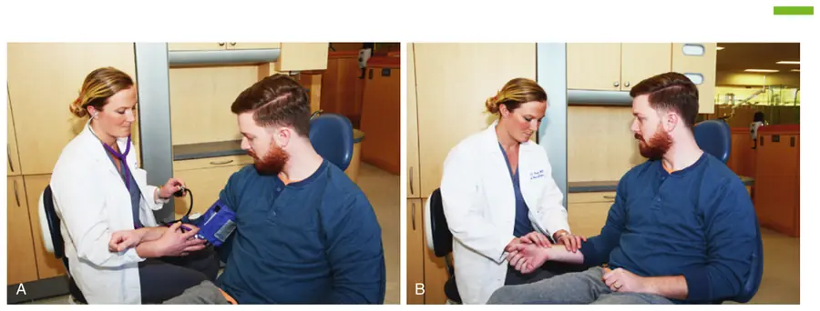

نسخه استخراجشده؛ ترجمه یا تأیید علمی انجام نشده است. وضعیت: captured
با یک تمایز آغاز کنیم: گسترهی شرححال پزشکی، معاینهی فیزیکی، و ارزیابی آزمایشگاهی بیمارانی که به جراحی دنتوآلوئولار سرپایی تحت بیحسی موضعی، سداسیون با نیتروس اکساید، یا هر دو نیاز دارند، بهطور اساسی با آنچه برای بیمار نیازمند بستری و بیهوشی عمومی لازم است تفاوت دارد.

و یک واقعگرایی: پزشک مراقبت اولیهی بیمار معمولاً شرححال جامع و معاینهی فیزیکی دورهای انجام میدهد؛ پس تکرار این فرایند برای دندانپزشک غیرعملی و کمارزش است.
ولی — و اینجا مسئولیت تو آغاز میشود: حرفهای دندانی باید حضور یا سابقهی مشکلات پزشکیای را کشف کند که میتوانند بر ارائهی ایمن مراقبتی که برنامهریزی میکند اثر بگذارند، و نیز هر وضعیتی که بهطور مشخص بر سلامت نواحی دهان و فک و صورت اثر میگذارد.
و این بهویژه برای بیمارانی صادق است که جراحی دنتوآلوئولار برایشان برنامهریزی شده — به چهار دلیل:
و یک نکتهی مهم دربارهی جایگاه حرفهای تو: دندانپزشکان در علوم پایهی زیستپزشکی و پاتوفیزیولوژی مشکلات پزشکی رایج آموزش دیدهاند، بهویژه آنجا که به ناحیهی فک و صورت مربوط میشوند.
و نتیجه: همین تخصص ویژه در موضوعات پزشکی مرتبط با ناحیهی دهان، دندانپزشکان را به اعضای ارزشمندی در تیم ارائهی مراقبت سلامت جامعه بدل میکند.
و اجزای شرححال پزشکی: دادههای زیستنگاشتی، شکایت اصلی، تاریخچهی شکایت اصلی، شرححال پزشکی، و مرور سیستمها — و سپس معاینهی فیزیکی.
و دستههای وضعیتهای پزشکی مخاطرهآمیزی که باید بشناسی: مشکلات قلبی-عروقی (بیماری ایسکمیک قلب، سکتهی مغزی، دیسریتمی، ناهنجاریهای قلبی مستعدکنندهی اندوکاردیت عفونی، نارسایی احتقانی قلب)، مشکلات ریوی (آسم، بیماری انسدادی مزمن ریه)، و مشکلات کلیوی (نارسایی کلیه، پیوند کلیه و سایر اعضا).
چهار عنصر ادعای قصور پزشکی — که بیمار باید هر چهار را ثابت کند:
و بار اثبات: بار اولیهی اثبات قصور بر عهدهی شاکی یعنی بیمار است؛ بیمار باید با رجحان دلیل — یعنی بیش از ۵۰ درصد — ثابت کند که هر چهار عنصر ادعا برقرار بودهاند.
و حالا هر عنصر:
وظیفه: پیش از آنکه وظیفه یا تعهد قانونی اعمال مراقبت مناسب بر عهده آید، باید رابطهی حرفهای میان دندانپزشک و بیمار وجود داشته باشد. و این رابطه وقتی برقرار میشود که دندانپزشک بیمار را بپذیرد یا بهگونهای درمان را آغاز کند.
و یک نکتهی مهم: پذیرش بیمار میتواند خودکار رخ دهد — مثلاً وقتی دندانپزشک آنکال اورژانس است و بیماری مراجعه میکند. ولی معمولاً دندانپزشک تا وقتی که (شفاهی یا کتبی) با درمان بیمار موافقت نکند، از نظر قانونی وظیفهای در برابرش برقرار نمیکند — و صرفِ حاضر شدن بیمار تازه در مطب، رابطهی دندانپزشک-بیمار یا وظیفهی قانونی برقرار نمیسازد.
نقض وظیفه — و تعریف «استاندارد مراقبت»: دندانپزشک وظیفه دارد مراقبتی به بیمار بدهد که دستکم به استاندارد مراقبت خوب دندانی برسد.
و این استانداردها کجا نوشته شدهاند؟ هیچجا نوشته نشدهاند؛ معمولاً در هر پرونده بهطور جداگانه توسط کارشناسان دندانی که حین پروندههای قصور استخدام میشوند تعیین میگردند تا نظرشان را دربارهی استاندارد مراقبت لازم در شرایط آن پرونده به قاضی یا هیئتمنصفه بدهند.
و مهمترین ظرافت این تعریف: استاندارد مراقبت، دندانپزشک را ملزم نمیکند بالاترین سطح درمانی را که ماهرترین دندانپزشک اعمال میکند یا آنچه در دانشکده تدریس میشود ارائه دهد. در عوض: استاندارد مراقبت قرار است مخرج مشترکی باشد که با آنچه پزشکان متوسط معمولاً در شرایط مشابه انجام میدهند تعریف میشود.
خسارت: نوعی خسارت واقعی باید نشان داده شود؛ خسارت میتواند فیزیکی، ذهنی، یا هر دو باشد. و بیماری که تنها از سر انتقام یا اختلاف بر سر پرداخت شکایت میکند، اگر نتواند هیچ خسارت واقعی نشان دهد، نمیتواند پروندهی قصور را ببرد.
سببیت — و مهمترین مثالش برای جراح دهان: باید نشان داده شود که نرسیدن به مراقبت استاندارد، علت آسیب بیمار بوده است.
و صریح بدان: دندانپزشکان در برابر خطرات ذاتی درمان که در نبود قصور رخ میدهند مسئول نیستند. برای نمونه، دندانپزشک مسئول نیست اگر بیمار پس از کشیدن درست مولر سوم، بیحسی لب را تجربه کند — این عارضهای است که در ادبیات علمی شناخته شده.
ولی دو حالت که مسئولیت قانونی میآورند:
و همین دومی، پل مستقیم به رضایت آگاهانه است.
رضایت آگاهانه — مفهومش: بیمار حق دارد خطرات و عوارض شناختهشدهی ذاتی یک درمان را در نظر بگیرد؛ این به بیمار امکان میدهد تصمیمی آگاهانه و داوطلبانه بگیرد که درمان توصیهشده را پیش ببرد یا گزینهی دیگری را برگزیند.
و منطق مسئولیت: اگر بیمار بهدرستی از خطرات ذاتی آگاه شده باشد، حتی اگر عارضهای رخ دهد، دندانپزشک در نبود قصور از نظر قانونی مسئول نیست. ولی دندانپزشک میتواند مسئول شناخته شود وقتی خطری ذاتی رخ دهد و او رضایت آگاهانهی بیمار را نگرفته باشد — و دلیل این مسئولیت آن است که بیمار از فرصت رد کردن درمان، پس از آگاه شدن درست از خطرات و گزینههای معقول، محروم شده است.
و یک هشدار حقوقی: درمان بدون رضایت آگاهانهی درست، میتواند «ضرب» (battery) شمرده شود — یعنی لمس عمدی فردی بدون رضایتش.
و سه فاز رضایت آگاهانه: ۱ — آگاه کردن، ۲ — رضایت کتبی، و ۳ — مستندسازی در پروندهی بیمار.
و هفت حیطهای که باید دربارهشان گفتوگوی صریح انجام شود:
و معیار قابلفهم بودن: این اطلاعات باید چنان ارائه شوند که بیمار در فهمشان دشواری نداشته باشد. و در صورت طرح دعوا، هیئتمنصفه تعیین خواهد کرد که آیا اطلاعات به شیوهای قابل فهم ارائه شدهاند؛ پس دندانپزشک باید اطلاعات را چنان بدهد که یک عضو متوسط هیئتمنصفه بتواند توصیف برنامههای درمانی و خطرات را بفهمد.
و دربارهی زبان بیمار: باید مستند شود که آیا بیمار میتواند زبان فرم رضایت را بخواند و بفهمد؛ اگر نه، ارائه و رضایت کتبی باید به زبان گفتاری بیمار داده شوند.
و دربارهی ویدئو و آموزش تعاملی: میتوانند بخشی از فرایند رضایت آگاهانه باشند، ولی نباید جایگزین گفتوگوی مستقیم دندانپزشک و بیمار شوند؛ و در پایان ارائه، به بیمار باید فرصت پرسیدن پرسشهای افزوده داده شود.
و یک یافتهی انسانی که باید بر آن تأکید کرد: بیمارانی که انتظارات معقول و رابطهی مساعدی با دندانپزشکشان دارند، بسیار کمتر احتمال دارد شکایت کنند و بیشتر احتمال دارد عوارض را تحمل نمایند.